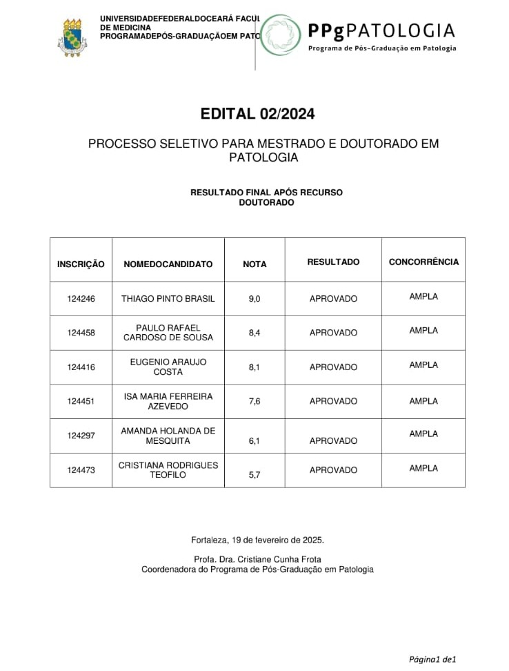
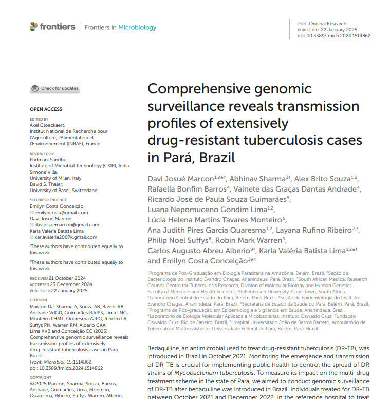
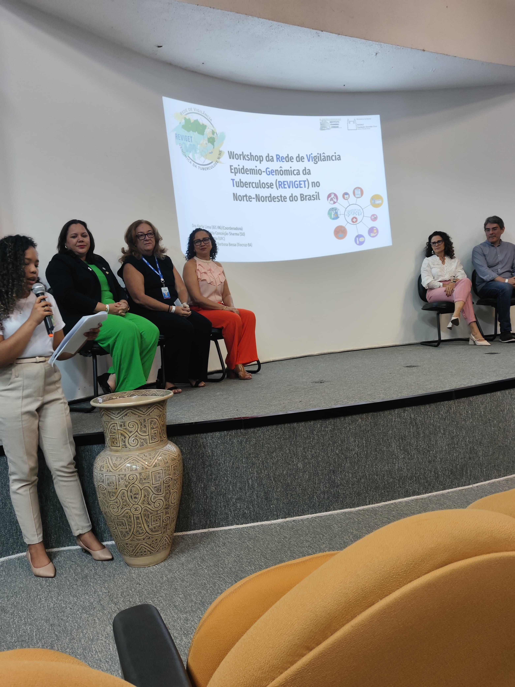
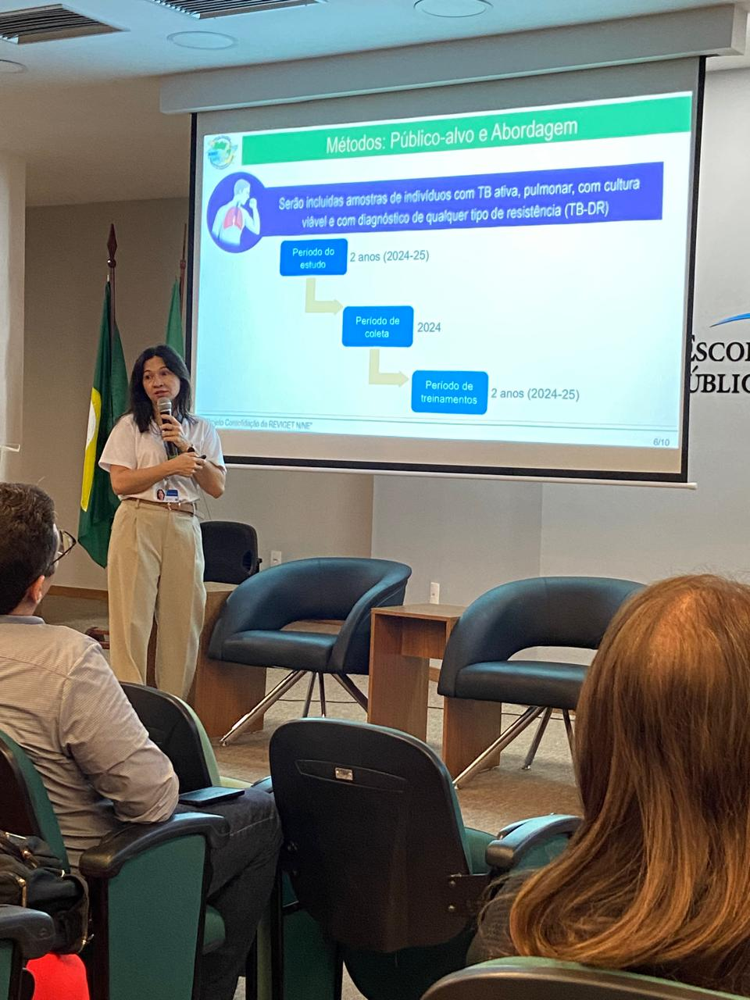
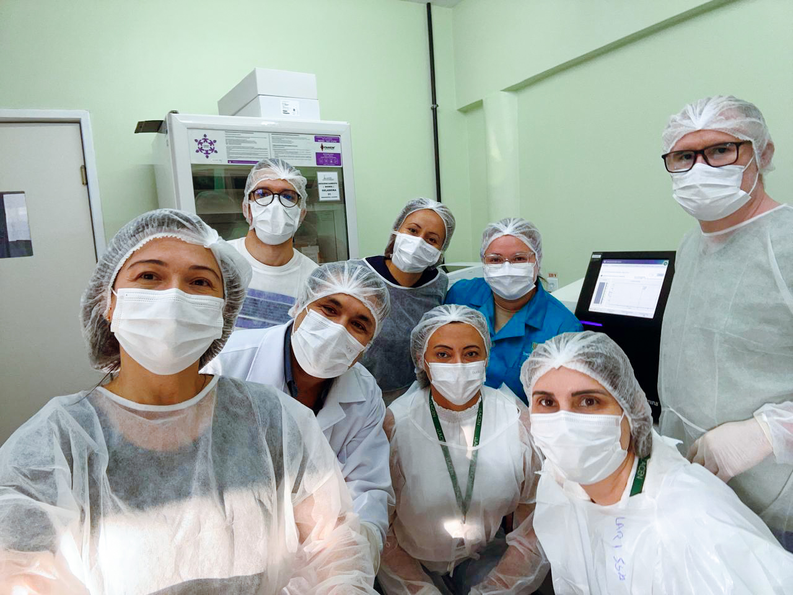
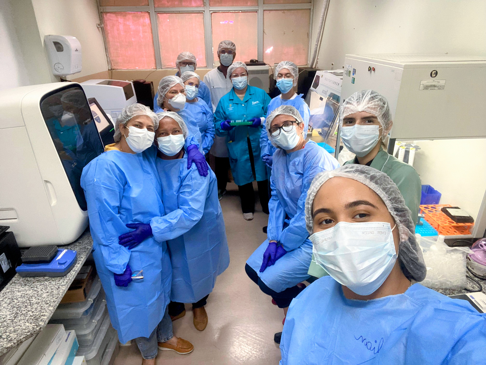
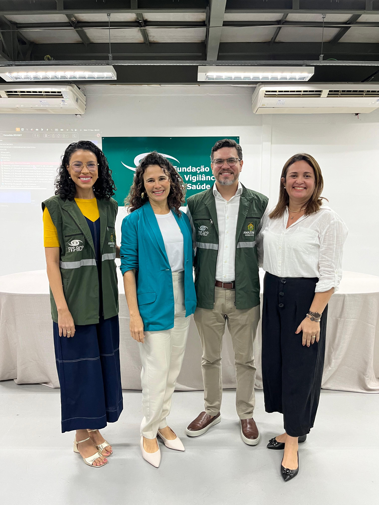

Confira os principais marcos da nossa trajetória! Nesta série, você acompanha as conquistas, eventos e novidades da Rede REVIGET.
Aqui valorizamos quem faz ciência, saúde pública e vigilância genômica acontecerem nas regiões Norte e Nordeste do Brasil.
ACONTECERà E MARCAREMOS PRESENÇA!
Nos siga nas redes sociais e nos encontre nestes eventos que acontecerão:
MEDTROP 2025
Data: 02-11-2025
O 60º Congresso da Sociedade Brasileira de Medicina Tropical (MEDTROP) acontecerá no perÃodo de 02 a 05 de novembro de 2025 e estamos preparando nossas apresentações!
LACEN-AM e FVS
Data: 20-08-2025
O LACEN-AM, Fundação de Vigilãncia em Saúde (FVS), promoverá um super evento de capacitação no estado do Amazonas e marcaremos presença!
CONGRESSO BRASILEIRO DE GENÉTICA 2025
Data: 13-08-2025
O GENÉTICA 2025 será realizado em Belém, PA, perÃodo de 13 a 16 de agosto de 2025 e estaremos lá!
Semana de CT&I SUS
Data: 05-06-2025
No dia 5 de junho nossa coordenadora do REVIGET estará compartilhando o nosso progresso na reunião de Ciência, Tecnologia e Inovação para o SUS, em BrasÃlia. Na oportunidade, estaremos conversamos sobre a integração dos saberes com os demais projetos aprovados na chamada N29/2023 do CNPq.
ACONTECEU E REGISTRAMOS AQUI!
APROVAÇÃO DA CANDIDATURA AO DOUTORADO: DAVI MARCON - PARà 🏆
Data: 12-05-2025
No dia 12 de maio de 2025, o bolsita REVIGET Davi Marcon foi aprovado no doutorado do Programa de Pós-Graduação em Biologia Parasitária na Amazônia (PPGBPA/UEPA/IEC). A conquista marca mais um passo importante na formação de jovens pesquisadores comprometidos com a ciência e a saúde pública na região amazônica. Parabéns, Davi!
APROVAÇÃO DA CANDIDATURA AO MESTRADO: DANNA SANTOS - PARà 🏆
Data: 29-04-2025
No dia 29 de abril de 2025, a bolsita REVIGET Danna Santos foi aprovada no mestrado do Programa de Pós-Graduação em Biologia Parasitária na Amazônia (PPGBPA/UEPA/IEC). A conquista marca mais um passo importante na formação de jovens pesquisadores comprometidos com a ciência e a saúde pública na região amazônica. Parabéns, Danna!
WEBINAR: DIA MUNDIAL DA TB 2025 📊
Data: 31-03-2025
📢 Webinar com especialistas sobre TB, vigilância genômica e estratégias de enfrentamento da doença. Participaram Dra. Theolis Bessa, Dr. Carlos Albério, Dra. Emilyn Costa, Dr. Eduardo Alves e Dra. Karla Lima.
No dia 31 de março de 2025, das 11h à s 12h, reunimos especialistas para um painel imperdÃvel sobre tuberculose, vigilância genômica e estratégias para o enfrentamento da doença no Brasil.
🔠Programação: 🫠O que é a REVIGET e como ela impacta a Região N/NE? – Dra. Theolis Bessa (FIOCRUZ-BA).
🩺 Como tratarmos a tuberculose no Brasil? – Dr. Carlos Albério (HUJBB-UFPA).
🧬 Como usar sequenciamento genômico (tNGS e WGS) para Medicina de Precisão e Vigilância da TB-DR? – Dra. Emilyn Costa (Stellenbosch University).
📊 Qual o panorama epidemiológico e quais perspectivas do Programa Nacional no enfrentamento da TB-DR? – Dr. Eduardo Alves (CGTM).
📍Coordenadora REVIGET e Mediadora - Dra. Karla Lima (IEC-PA).
Ah, aproveitando que você está aqui, ouça essa mensagem com as vozes da equipe REVIGET:
QUALIFICAÇÃO DE MESTRADO: LAYANA RUFINO - PARà ↻ ◌⏳
Data: 21-03-2025
Layana Rufino qualificou sua dissertação sobre TB resistente à rifampicina 🫁. O trabalho conta com orientação da Dra. Fernanda Sagica e coorientação da Dra. Emilyn Costa.
No dia 21 de março de 2025, a bolsista da Rede REVIGET, Layana Rufino, realizou a qualificação de sua dissertação de mestrado no Programa de Pós-Graduação em Vigilância em Saúde (PPGVES/IEC). O trabalho intitula-se “Análise epidemiogenômica da tuberculose resistente à rifampicina no estado do Pará†e está sendo desenvolvido sob orientação da Dra. Fernanda do EspÃrito Santo Sagica e coorientação da Dra. Emilyn Costa Conceição. A banca examinadora foi composta pelos pesquisadores Carlos Augusto Abreu Alberio e Karla Valéria Batista Lima. A qualificação ocorreu pela manhã, em ambiente virtual. Parabéns, Layana, por mais esse passo na trajetória acadêmica e cientÃfica!
GRADUAÇÃO: LILIAN FREITAS - AMAZONAS 👩🏻‍🎓
Data: 28-02-2025
Lilian Freitas recebeu o tÃtulo de bacharela em Biomedicina e honra ao mérito do CRBM-4. Parabéns por essa etapa! 💝
No dia 28 de fevereiro de 2025, a bolsista REVIGET, Lilian Freitas obteve o tÃtulo de bacharela em biomedicina pelo Centro Universitário Fametro, recebendo também uma honra ao mérito do Conselho Regional de Biomedicina da 4a região pelo seu desempenho acadêmico. Parabéns Lilian, este marco representa o inÃcio de novas responsabilidades e oportunidades no exercÃcio da profissão.
DEFESA MESTRADO: DAVI MARCON - PARà 👨🏼‍🎓
Data: 24-02-2025
Davi defendeu sua dissertação sobre epidemiologia genômica da TB após introdução da bedaquilina. Parabéns pela excelente defesa! 👏🏽🥳
No dia 24 de fevereiro de 2025, o bolsita REVIGET Davi Josué Marcon defendeu sua dissertação de mestrado intitulada “Epidemiologia genômica da tuberculose droga-resistente no estado do Pará após a introdução da bedaquilina”, no Programa de Pós-Graduação em Biologia Parasitária na Amazônia (PPGBPA/UEPA/IEC). A defesa ocorreu pela manhã, no campus CCBS da UEPA, sob orientação da Profª Dra. Karla Valéria Batista Lima e coorientação do Dr. Carlos Augusto Abreu Alberio. A banca avaliadora foi composta por Fabiano Cordeiro Moreira, SÃntia Silva de Almeida e Carlos Alberto Marques de Carvalho. Parabéns, Davi, por essa importante conquista e pela contribuição cientÃfica à vigilância genômica da TB no Pará!
APROVAÇÃO DA CANDIDATURA AO DOUTORADO: THIAGO BRASIL - CEARà 🏆
Data: 19-02-2025
Thiago foi aprovado no doutorado em Patologia da UFC. Um novo passo na trajetória cientÃfica! 🙌🏿
No dia 19 de fevereiro de 2025, Thiago Pinto Brasil foi aprovado no doutorado do Programa de Pós-Graduação em Patologia da Universidade Federal do Ceará (PPG Patologia/UFC). A aprovação representa mais um passo importante na trajetória acadêmica de Thiago e reforça o compromisso com a formação de excelência na pesquisa em saúde!

INÃCIO DAS CAPACITAÇÕES ONLINE DE BIOINFO 💻
Data: 11-02-2025
Capacitação online em bioinformática do REVIGET começou com a Dra. Emilyn Costa 👩🏻‍💻 e Abhinav Sharma 👨🏾‍💻. Formação técnica essencial para vigilância genômica da TB.
No dia 11 de fevereiro de 2025, teve o inÃcio da capacitação online em bioinformática promovida pelo Projeto REVIGET. As aulas e atividades estão sendo realizadas em ambiente virtual. Foi ministrada, nesse primeiro dia, pela Dra. Emilyn Costa Conceição, capacitadora principal em Laboratório e Interpretação dos Dados de Bioinformática, e pelo doutorando Abhinav Sharma, capacitador Principal em Bioinformática. A capacitação têm como objetivo fortalecer as competências técnicas das equipes dos quatro estados estratégicos das regiões Norte e Nordeste: Amazonas, Pará, Ceará e Bahia que estão envolvidas na vigilância genômica da tuberculose, com foco na análise de dados genômicos e no uso de ferramentas bioinformáticas aplicadas à saúde pública.

GRADUAÇÃO: DANNA SANTOS - PARà 👩🏻‍🎓
Data: 23-01-2025
Danna Santos colou grau em Biomedicina, sendo homenageada como 3ª melhor aluna da turma. Sucesso! 🎊
No dia 23 de janeiro de 2025, no auditório do Centro de Ciências Naturais e Tecnologia da Universidade do Estado do Pará (CCNT/UEPA), a bolsista REVIGET Danna Santos participou da solenidade de colação de grau e recebeu o tÃtulo de bacharela em Biomedicina pela turma de 2021. Na ocasião, foi homenageada com Menção Honrosa como 3ª melhor aluna do curso. Parabéns Danna, pela conquista!
PUBLICAÇÃO DE ARTIGO - PARà (MARCON et al. 2025) 📚
Data: 09-01-2025
O artigo do mestrado de Davi foi publicado na Frontiers in Microbiology, abordando a transmissão de TB extensivamente resistente no Pará.
O bolsista da Rede REVIGET, Davi Josué Marcon, teve seu artigo publicado no dia 1º de setembro de 2025 na revista Frontiers in Microbiology. Intitulado “Comprehensive genomic surveillance reveals transmission profiles of extensively drug-resistant tuberculosis cases in Pará, Brazil”, o estudo apresenta uma análise aprofundada da vigilância genômica de casos de tuberculose extensivamente resistente no estado do Pará, contribuindo para o entendimento da dinâmica de transmissão e reforçando a importância da genômica na resposta à TB no Brasil.
Parabenizamos o autor pela relevante contribuição cientÃfica! 🎉🥂🎉

TESE DE TCC: DANNA SANTOS - PARà 👩🏻‍🏫
Data: 09-12-2024
Danna defendeu a sua tese de conclusão de curso (TCC) intitulado sobre variantes de resistência à bedaquilina. Nota 10!
No dia 9 de dezembro de 2024, no Centro de Ciências Biológicas e da Saúde da Universidade do Estado do Pará (CCBS/UEPA), a bolsista REVIGET Danna Santos defendeu seu Trabalho de Conclusão de Curso intitulado “Análise estrutural in silico baseada em modelagem molecular: Explorando variantes de resistência à bedaquilina em Mycobacterium tuberculosis”. A pesquisa foi orientada pela Dra. Karla Lima e coorientada por Davi Marcon. Danna foi aprovada com nota 10. Parabéns pela excelente defesa e dedicação à pesquisa cientÃfica!
Treinamento em Bioinformática - LACEN-BA🧬
Data: 05-12-2024
No treinamento em bioinformática o Dr. Hendor Neves (Fiocruz-BA) e Mestrando Davi Josué Marcon (PPGBPA/UEPA/IEC) introduziram o conhecimento sobre os computadores para a bioinformática, o pipeline MAGMA para análise genômica de amostras clÃnicas de MTB (Mycobacterium tuberculosis) e como analisar os resultados do Sequenciamento Genômico. Com eles também houve a participação da Dra. Emilyn Costa (Stellenbosch University) de forma remota. Juntos, ensinaram os participantes a utilizarem as ferramentas computacionais e analisar os dados.
TREINAMENTO LABORATORIAL EM WGS- LACEN-BA🧬
Data: 02-12-2024
O projeto REVIGET tem como um de seus objetivos principais capacitar os LACENs no Norte e Nordeste do Brasil, para realizar a vigilância genômica de micobactérias.
Durante o treinamento laboratorial realizado no LACEN-BA, o técnico Msc. Alex Brito da Seção de Bacteriologia do Instituto Evandro Chagas (IEC), juntamente com o mestrando Davi Marcon (IEC/UEPA/PPGBPA) e o Gustavo Gasparin (Representante da Illumina), ensinaram aos profissionais do LACEN-BA todas as etapas de realização do sequenciamento genômico: extração, controle de qualidade, preparo de biblioteca e o sequenciamento genômico. Um passo essencial para o avanço no diagnóstico e controle da tuberculose no paÃs! 🔬
WORKSHOP REVIGET - BAHIA 🧬
Data: 02-12-2024
Última edição do Workshop REVIGET no ano de 2024 em Salvador-BA, com grandes especialistas em TB e vigilância genômica.
Na segunda-feira (02/11/2024), foi realizada a última edição do Workshop da Rede de Vigilância Genômica da Tuberculose (REVIGET), no Auditório Sonia Andrade, Fiocruz Bahia.
O evento contou com a participação de grandes nomes da área, como:
🧬Dra. Theolis Costa Barbosa Bessa - Coordenadora do projeto REVIGET na Bahia.
🫁Francisco Dos Santos Santana - Coordenação de Vigilância Epidemiológica de Agravos TransmissÃveis (COAGRAVOS).
🧪Andréa Salvador de Almeida - Diretoria de Vigilância da Saúde da Secretaria Municipal de Saúde de Salvador.
🦠Dra. Arabela Leal e Silva de Mello - Diretora do Laboratório Central de Saúde Pública Prof. Gonçalo Moniz.
🔬Dra. Marilda de Souza Gonçalves - Diretora do Instituto Gonçalo Moniz - Fiocruz Bahia.
🧫Dra. Eliana Dias Matos - membro do serviço técnico especializado do Ministério da Saúde e serviço técnico especializado da Secretaria de Saúde do Estado da Bahia para a tuberculose.
🧬Dra. Karla Valéria Batista Lima - Coordenadora do projeto REVIGET.
Esta é a última de quatro edições do evento, que já ocorreram no Amazonas, Ceará e Pará.
Agradecemos a todos os participantes por terem contribuÃdo para o sucesso deste importante evento. Seguimos juntos no compromisso de fortalecer a vigilância genômica da tuberculose! 🫁🧬✅
WORKSHOP REVIGET - PARà 🧬
Data: 29-11-2024
Terceira edição do Workshop REVIGET no LACEN-PA, fortalecendo parcerias no estado do Pará.
Na sexta-feira (29/11/2024), foi realizada a terceira edição do Workshop da Rede de Vigilância Genômica da Tuberculose (REVIGET), no Auditório do Laboratório Central do Estado do Pará (LACEN-PA).
O evento contou com a participação de grandes nomes da área, como:
🧬 Dra. Karla Valéria Batista Lima, coordenadora do Projeto REVIGET (IEC).
🫠Dr. Carlos Augusto Abreu Alberio, Médico pneumologista Hospital Universitário João de Barros Barreto (HUJBB).
🦠Lúcia Helena Martins Tavares Monteiro, Coordenadora Estadual da Tuberculose (SESPA).
🔬 Dra. LÃvia CarÃcio Martins, Diretora do Instituto Evandro Chagas (IEC).
🧫 Valnete das Graças Dantas Andrade, Diretora técnica do Laboratório Central do Estado do Pará (LACEN-PA).
Esta é a terceira de quatro edições do evento, que já ocorreu no Amazonas e Ceará, e que ainda ocorrerá na Bahia.
Agradecemos a todos os participantes por terem contribuÃdo para o sucesso deste importante evento. Seguimos juntos no compromisso de fortalecer a vigilância genômica da tuberculose! 🫁🧬✅
 
PARTICIPAÇÃO NO CONGRESSO BRASILEIRO DE EPIDEMIOLOGIA
Data: 25-11-2024
Entre os dias 23 e 27 de novembro de 2024, os pesquisadores Ana Judith Pires Garcia Quaresma, Carlos Augusto Abreu Albério, Karla Valéria Batista Lima e Maria Cristina Lourenço participaram do 12º Congresso Brasileiro de Epidemiologia: A Epidemiologia e a complexidade dos desafios sanitários, realizado no Rio de Janeiro. O evento reuniu especialistas de todo o paÃs para discutir avanços, desafios e inovações na área da epidemiologia, fortalecendo o intercâmbio cientÃfico e a construção de redes colaborativas em saúde pública.
TREINAMENTO LABORATORIAL EM WGS - PARà 🧬
Data: 25-11-2024
O projeto REVIGET tem como um de seus objetivos principais capacitar os LACENs no Norte e Nordeste do Brasil, para realizar a vigilância genômica de micobactérias.
Durante o treinamento laboratorial realizado no LACEN-PA, o técnico Msc. Alex Brito da Seção de Bacteriologia do Instituto Evandro Chagas (IEC), juntamente com os mestrandos Davi Marcon (IEC/UEPA/PPGBPA) e Layana Rufino (IEC/PPGEVS), ensinaram aos profissionais do LACEN-PA todas as etapas de realização do sequenciamento genômico: extração, controle de qualidade, preparo de biblioteca e o sequenciamento genômico. Um passo essencial para o avanço no diagnóstico e controle da tuberculose no paÃs! 🔬

TREINAMENTO EM BIONFORMÃTICA - CEARà 💻
Data: 21-11-2024
Segunda edição do Workshop REVIGET em Fortaleza-CE, com participação de instituições locais.
No treinamento em bioinformática o MSc Abhinav Sharma (Stellenbosch University) e a Dra. Emilyn Costa (Stellenbosch University) introduziram o conhecimento sobre os computadores para a bioinformática, o pipeline MAGMA para análise genômica de amostras clÃnicas de MTB (Mycobacterium tuberculosis) e como analisar os resultados do Sequenciamento Genômico. Com eles também houve a participação do MSc Alex Brito (técnico/IEC) e da Dra. Cristiane Frota (coordenadora do REVIGET/CE). Juntos, ensinaram os participantes a utilizarem as ferramentas computacionais e analisar os dados.


📢 WORKSHOP REVIGET - CEARà 🧬
Data: 21-11-2024
Segunda edição do Workshop REVIGET em Fortaleza-CE, com participação de instituições locais.
Na quinta-feira (21/11/2024), foi realizada a segunda edição do Workshop da Rede de Vigilância Genômica da Tuberculose (REVIGET), no Auditório da Escola de Saúde Pública, Fortaleza - CE.
O evento contou com a participação de grandes nomes da área, como:
🔬 Dra. Cristiane Cunha Frota - coordenadora REVIGET do Ceará, professora da Faculdade de Medicina da Universidade Federal do Ceará.
🧬 Dra. Emilyn Costa – Pesquisadora de pós-doutorado no TB Genomics, Universidade de Stellenbosch, Ãfrica do Sul.
🦠Antônio Silva Lima Neto - Secretário Executivo de Vigilância em Saúde da Secretaria de Saúde do Ceará.
🧫 Ãtalo José Mesquita Cavalcante - Diretor-geral LACEN-CE.
🫠Dr. Carlos Garcia Filho - Epidemiologista da Coordenadoria de Vigilância Epidemiológica da Secretaria de Saúde do Ceará.
Esta é a segunda de quatro edições do evento, que já ocorreu no Amazonas e que também ocorrerão no Pará e Bahia.
Agradecemos a todos os participantes por terem contribuÃdo para o sucesso deste importante evento. Seguimos juntos no compromisso de fortalecer a vigilância genômica da tuberculose! 🫁🧬✅
 
📢 TREINAMENTO LABORATORIAL EM WGS - CEARà 🧬
Data: 18-11-2024
Durante o treinamento laboratorial realizado no LACEN-CE, em Fortaleza, a Dra Emilyn Costa, pesquisadora de pós doutorado no TB Genomics, na Universidade de Stellenbosch com apoio do o técnico MSc. Alex Brito da Seção de Bacteriologia do Instituto Evandro Chagas (IEC), ensinaram aos profissionais do LACEN-CE todas as etapas de realização do sequenciamento genômico: extração, controle de qualidade, preparo de biblioteca e o sequenciamento genômico. Um passo essencial para o avanço no diagnóstico e controle da tuberculose no paÃs! 🔬

📢 TREINAMENTO LABORATORIAL EM WGS - AMAZONAS 🧬
Data: 13-11-2024
O estado do Amazonas hospedou o inicio das capacitações, sendo que a introdução à Bioinformática aconteceu no prédio da EDUCAC. O treinamento foi liderado pelo MSc Abhinav Sharma (Stellenbosch University) e a Dra. Emilyn Costa (Stellenbosch University) os quais introduziram o conhecimento sobre os computadores para a bioinformática, o pipeline MAGMA para análise genômica de amostras clÃnicas de MTB (Mycobacterium tuberculosis) e como analisar os resultados do Sequenciamento Genômico. Com eles também houve a participação do MSc Alex Brito (técnico/IEC) e da Dra. Karla Lima (coordenadora do REVIGET/IEC).
📢 TREINAMENTO LABORATORIAL EM WGS - AMAZONAS 🧬
Data: 11-11-2024
Durante o treinamento laboratorial realizado no LACEN-CE, em Fortaleza, a Dra Emilyn Costa, pesquisadora de pós doutorado no TB Genomics, na Universidade de Stellenbosch com apoio do o técnico MSc. Alex Brito da Seção de Bacteriologia do Instituto Evandro Chagas (IEC), ensinaram aos profissionais do LACEN-CE todas as etapas de realização do sequenciamento genômico: extração, controle de qualidade, preparo de biblioteca e o sequenciamento genômico. Um passo essencial para o avanço no diagnóstico e controle da tuberculose no paÃs! 🔬

📢 WORKSHOP REVIGET - Amazonas 🧬
Data: 11-11-2024
Primeira edição do Workshop REVIGET em Manaus/AM.
Nesta segunda-feira (11/11), foi realizada a primeira edição do Workshop da Rede de Vigilância Genômica da Tuberculose (REVIGET), no auditório da Fundação de Vigilância em Saúde do Amazonas – Dra. Rosemary Costa Pinto (FVS-RCP), em Manaus/AM.
O evento contou com a participação de grandes nomes da área, como:
🧪Dr. MaurÃcio Ogusku – Pesquisador do Instituto Nacional de Pesquisas da Amazônia.
🧬 Dra. Emilyn Costa – Pesquisadora de pós-doutorado no TB Genomics, Universidade de Stellenbosch, Ãfrica do Sul.
🔬Dra. Luciana Fé – Diretora de Ensino, Pesquisa e Inovação da FVS-RCP.
🫠Dra. Karla Lima – Coordenadora do projeto Reviget.
🦠Dr. Marco Oliveira – Diretor do Laboratório Central de Saúde Pública do Amazonas.
🧫 Adriana Ayden Ferreira - Farmacêutica BioquÃmica responsável pelo setor de tuberculose no Laboratório Central de Saúde Pública do Amazonas.
Esta é a primeira de quatro edições do evento, que também ocorrerão no Ceará, Pará e Bahia. Agradecemos a todos os participantes por contribuÃrem para o sucesso deste importante evento. Seguimos juntos no compromisso de fortalecer a vigilância genômica da tuberculose! 🫁🧬✅

PARTICIPAÇÃO NO CONGRESSO MEDTROP 2024 🗣
Data: 23-09-2024
Participação da equipe REVIGET no 59º MEDTROP em São Paulo.
Nos dias 22 a 25 de setembro de 2024, a equipe REVIGET teve o privilégio de estar presente no 59º MEDTROP - Congresso Brasileiro da Sociedade Brasileira de Medicina Tropical, realizado em São Paulo.
O evento reuniu grandes especialistas e instituições, proporcionando debates importantes e inovadores para o futuro da saúde pública no Brasil. Nossa participação reforça o compromisso da equipe REVIGET em colaborar com o desenvolvimento cientÃfico e fortalecer medidas de vigilância epidemiológica e genômica no combate à tuberculose.
💡 Seguimos engajados na missão de construir um futuro mais saudável para todos!
🥠Confira alguns momentos!
TREINAMENTO EM NB3 NA ÃFRICA DO SUL 👩🏻‍💻📓✍🏻💡
Data: 09-07-2024
Capacitação em NB3 na Universidade de Stellenbosch, com participação de pesquisadoras da REVIGET.
Estamos felizes em compartilhar alguns momentos marcantes de nossa recente capacitação, que ocorreu no dai 09 de julho de 2024 na Universidade de Stellenbosch na Ãfrica do Sul @stellenboschuni @su_mbhg. Nossas pesquisadoras, Dra. @karlalima.pa (@iec_br) e Dra. @cristianefrota71 (@ufcinforma), participaram do treinamento no laboratório de nÃvel de Biossegurança 3 (NB3) que representa um marco em nossa trajetória de pesquisa e desenvolvimento na área da #Tuberculose no Brasil.
A oportunidade foi concedida pela Chamada @cnpq_oficial /MCTI-FNDCT CT-Transversal No 29/2022: Capacitação estratégica de Recursos Humanos para atuação em ambientes de alto nÃvel de contenção biológica.
A experiência foi possÃvel com a colaboração com o grupo de pesquisa @tbgenomics liderado pelo Prof Rob Warren da @suhealthsci e South Africa Medical Research Concil (#SAMRC).
Além do Prof Rob Warren, outros membros do REVIGET também pertencem a @stellenboschuni. A Dra Emilyn Costa (@tbgenomics) e o Bioinformata Abhinav Sharma (do grupo de pesquisa Bionformatics Research Unit) e o renomado Prof Túlio de Oliveira (do Center of Epidemics Centre for Epidemic Response & Innovation - @ceri_news).
As principais atividades foram:
🔹 Certificação de Boas Praticas Laboratoriais e ClÃnicas.
🔹 Capacitação ao NB3 conduzido pelo Dr. Cebisa.
🔹Processamento de amostras para diagnóstico de Micobactérias (cultura e Teste de Susceptibilidade Antimicrobiana) guiado pelas pesquisadoras Noorjhan e Cláudia.
🔹 Análise de dados do MGIT com Dr. Frik.
🔹 Discussão sobre o pipeline MAGMA com Abhinav Sharma.
🔹 Visita técnica ao laboratório CERI guiado pelo Prof. Túlio de Oliveira.
A combinação de infraestrutura avançada e colaborações internacionais torna Stellenbosch um centro de excelência para pesquisa em biossegurança e microbiologia, além de colaborar em projetos conjuntos para o controle e erradicação da tuberculose.


PARTICIPAÇÅO CONGRESSO INTERNACIONAL - ESM
Data: 23-06-2024
O REVIGET foi representado no 44º Congresso Anual da Sociedade Europeia de Micobacteriologia que ocorreu de 23 a 26 de junho, em Oud Sint-Jan, Bruges, Bélgica, pela Dra Karla Lima, Dra Emilyn Costa e Dr. Philip Suffys. Na ocasião, a Dra Kara Lima apresentou os dados preliminares do GEMIBRA (Genomas de Micobactêrias no Brasil). Foi um momento de aprendizado e de reencontro com colaboradores como o Dr. Jody Phelan.
DEFESA MESTRADO: THIAGO BRASIL - CEARà 👨🏻‍🎓
Data: 18-06-2024
Thiago Brasil defendeu dissertação sobre mutações associadas à resistência aos fármacos de TB.
No dia 18 de junho de 2024, Thiago Brasil defendeu sua dissertação de mestrado no Programa de Pós-Graduação em Patologia da Universidade Federal do Ceará (PPG Patologia/UFC), na área de concentração em Doenças Infecto-Parasitárias. Intitulada “Análise das mutações relacionadas à resistência aos fármacos de 1ª e 2ª linha no tratamento da tuberculose pulmonar”, a dissertação foi apresentada como requisito parcial para obtenção do tÃtulo de Mestre em Patologia. A banca examinadora foi composta pelas professoras Cristiane Cunha Frota (orientadora), Elizabeth Clara Barroso, Karla Valéria Batista Lima e Maria Jânia Teixeira. Parabenizamos Thiago pela importante contribuição cientÃfica e pela conquista acadêmica!

Marco Zero REVIGET 🚀
Data: 13-06-2024
🉠Que dia incrÃvel! Em 13 de junho de 2024, celebramos em BrasÃlia o marco zero do Projeto REVIGET financiado pelo CNPq. A energia estava contagiante e mal podemos esperar para compartilhar os próximos passos com vocês!
#REVIGET #MarcoZero #BrasÃlia #Entusiasmo #Desenvolvimento